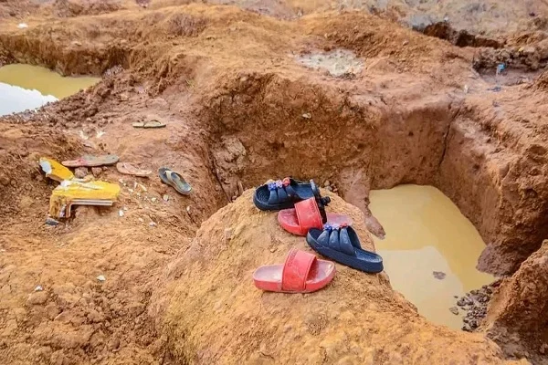

Security & Crime · 22 Sep 2026
Federal Government Suspends NSCDC Niger Commandant and 20 Officers Over 37 Custodial Deaths

The Federal Government has taken swift administrative action by suspending the Niger State Commandant and 20 personnel of the Nigeria Security and Civil Defence Corps following the tragic deaths of 37 suspected illegal miners held in their custody in Minna.
The Federal Government has taken swift administrative action, suspending the Niger State Commandant of the Nigeria Security and Civil Defence Corps (NSCDC), Suberu Aniviye, alongside 20 other personnel following the deaths of 37 suspected illegal miners in custody Punch Newspapers. The detainees tragically lost their lives while held by the security agency in Minna Punch Newspapers.
Background and Arrests
The victims were among scores of suspects arrested during operations conducted on September 15 and 16 around the Lt Gen Mohammed Inuwa Wushishi Estate in Minna, the Niger State capital Punch Newspapers. While the state commandant at the time had initially attributed the fatalities to a suspected disease outbreak in the early hours of Thursday Punch Newspapers, the exact cause of death remains subject to a formal independent inquiry The Reporter.
Government Intervention and Suspensions
Following a directive from President Bola Tinubu for a comprehensive investigation, Minister of Interior Olubunmi Tunji Ojo announced the suspensions The Reporter. The 20 suspended officers include personnel involved in station guard, arrest, investigation, intelligence, legal, and guard duties, while Commandant Aniviye was suspended separately The Reporter.
To thoroughly examine the tragedy, the Federal Government constituted a 10-member independent investigative committee chaired by Jonathan Kure, a retired Department of State Services Deputy Director General, with Prof. Isa Hayatu Chiroma serving as secretary The Reporter. The panel is tasked with establishing the identities of the deceased, investigating the circumstances of their arrest, detention, and death, and determining any responsibility, complicity, negligence, or misconduct The Reporter. The committee has been given a timeframe of two weeks to complete its assignment and submit its report The Reporter.
Identification of Victims
Efforts to document and identify the deceased have progressed through human rights organizations and hospital records. According to Awaisu Giwa, an International Peace Ambassador at the International Human Rights Commission (IHRC), an initial list was compiled from the records of the General Hospital, Minna, following instructions from the Chief Medical Director Punch Newspapers. Relatives of victims subsequently provided four additional names to account for individuals whose details were missing from the initial hospital records Punch Newspapers. The IHRC noted that this compilation will also assist in facilitating compensation for the bereaved families Punch Newspapers.
Sources
This article was produced by the C. O. Eric AI Newsroom from the cited sources. It is published only after automated evidence and safety checks.